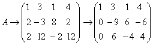
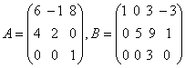

2.6 矩阵的秩
一、矩阵的子式
例如，设为4×5矩阵。 在A中共有5个4阶子式，但由于A中第4行为零行，因而所有4阶子式全为零。对于A中的3阶子式，显然出现非零子式，例如由前三行与第1，2，4列组成的3阶子式就是非零的。讨论说明A中非零子式的最高阶数为3，这个数字对矩阵很重要，我们引入矩阵的秩的概念。 |
二、矩阵的秩
由定义说明：
由定义求矩阵的秩是很麻烦的，如何求出矩阵的秩？ 对前面例子中矩阵A，它是一个阶梯形矩阵，我们发现它的秩就是A中非零行的行数，对一般的阶梯形矩阵，相同地有：
综合定理6.1，6.2有下述求矩阵的秩的方法： 矩阵A阶梯形矩阵B。 则中非零行的行数。 |
|
例1：求矩阵  的秩。 的秩。解：  因此 关于矩阵的秩，有以下结论： （1）设A为 （2） （3）设A为 （4）n阶方阵A为可逆矩阵。 所以，可逆矩阵常称为满秩矩阵。 把秩为m的 |
|
例2：设，求 解：容易看出，A为可逆矩阵。 B为阶梯形矩阵，，由上面性质（3），可知。 |
请认真答题，测试一下你对前面知识点的学习情况！
(单选题) 10．设矩阵A=，矩阵B=A-E，则矩阵B的秩r(B)=（ ）。
【答案】C
【解析】因为B=A-E=
所以r(B)=2。
【知识点】矩阵的秩